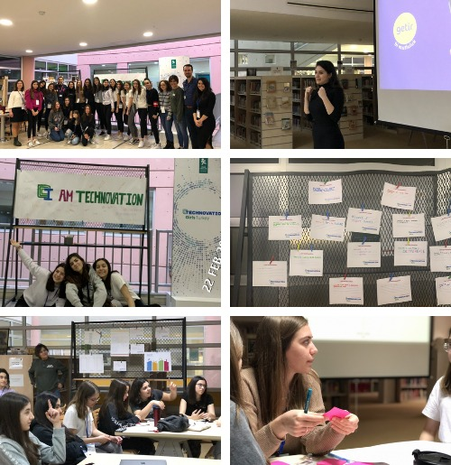

In February 2020, student ambassadors Debi Ahitov and Dafne Sarfati organized a Launch Event in Hisar Schools, where all the Technovation participants from Turkey were invited. The event started off with Debi and Dafne explaining the Technovation Challenge, the impact Technovation has made to girls around the world, and the important details of this year’s Season.
Furthermore, with their team, they described their own project, Tap-Tap Trees, which was selected as one of the finalist projects in the 2018 World Pitch. They continued their presentation by depicting their own World Pitch experience and how it changed their perspectives.
After a break, two woman software developers from a widely known start-up, Getir, made a presentation on being a woman entrepreneur in the tech field while also talking about the programming approaches of coding a popular mobile application.
Then, the students participated in a Design Thinking Workshop where they formed groups and had an ideation session about the Sustainable Development Goals and how they can be solved by the use of a mobile application.
After a pizza break, every group presented their own project and how they solved the problem.
Overall, the Launch Event was a success which all the participants got inspired and continued their own Technovation Projects. Also, the participants were handed out Thunkable, Xcode, and Business Plan booklets to guide them on their projects.